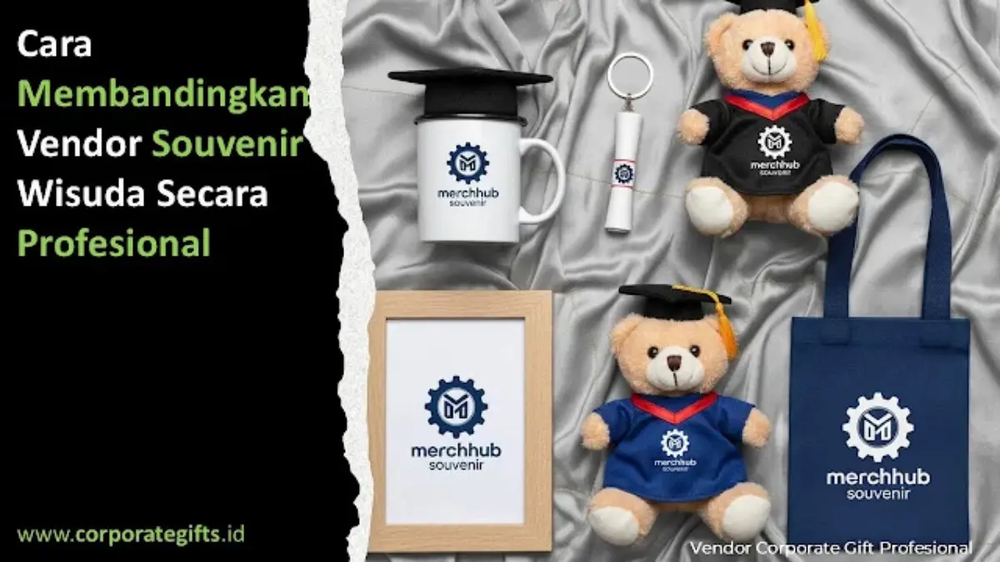

Corporate Gifts ID - Cara membandingkan vendor souvenir wisuda secara profesional adalah dengan menilai lima aspek utama: portofolio dan pengalaman vendor, kualitas bahan serta finishing produk, kewajaran harga terhadap nilai yang ditawarkan, testimoni pelanggan sebelumnya, dan kemampuan produksi massal sesuai jumlah wisudawan. Kelima aspek ini membantu panitia wisuda memilih vendor yang tepat tanpa hanya berpatokan pada harga termurah.
Souvenir wisuda bukan sekadar pelengkap acara seremonial, melainkan simbol penghargaan, dedikasi studi bertahun-tahun, dan kenangan berharga bagi para wisudawan serta civitas akademika. Karena itu, pemilihan vendor tidak boleh dilakukan secara terburu-buru. Pembahasan mendalam mengenai kriteria awal dapat dilihat pada referensi panduan souvenir wisuda yang berkesan sebagai dasar penyusunan kriteria sebelum masuk ke tahap evaluasi dan perbandingan teknis.
Poin Kunci Evaluasi Vendor Wisuda:
- Portofolio Akademik: Prioritaskan vendor dengan rekam jejak sukses mengerjakan proyek institusi pendidikan dan seremonial wisuda.
- Uji Sampel Fisik: Wajib meminta sampel nyata untuk mengevaluasi ketebalan bahan, presisi cetak logo, dan kualitas finishing.
- Kapasitas & SLA: Pastikan kapasitas pabrikasi mampu memproses ribuan pcs tepat waktu sebelum gladi bersih wisuda.
- Kewajaran Harga: Waspadai harga terlalu murah yang mengorbankan kualitas material; utamakan transparansi rincian RAB.
- Garansi & Layanan: Pilih vendor yang berani memberikan garansi penggantian jika ditemukan cacat produksi atau keterlambatan pengiriman.
Mengapa Perbandingan Vendor Souvenir Wisuda Itu Penting
Vendor souvenir memiliki peran besar dalam menentukan kesuksesan visual dan kualitas keseluruhan acara wisuda. Dua vendor dapat menawarkan produk yang terlihat mirip dalam lembar katalog digital, namun berbeda signifikan dalam detail pengerjaan, ketahanan material, hingga layanan purna jual.
Melalui proses perbandingan yang profesional dan terstruktur, panitia kampus dapat:
- Menilai mutu fisik barang dan kepatuhan terhadap jadwal produksi (SLA).
- Mengetahui reputasi riil vendor melalui ulasan institusi atau portofolio proyek serupa.
- Memastikan setiap rupiah anggaran terserap optimal sesuai kualitas dan estetika yang diharapkan dekanat.
Pendekatan komparatif ini membantu mencegah risiko fatal seperti keterlambatan pengiriman menjelang hari-H serta menjaga kredibilitas institusi di mata para wisudawan dan tamu kehormatan.
Langkah-Langkah Membandingkan Vendor Souvenir Wisuda
1. Evaluasi Portofolio dan Spesialisasi Vendor
Langkah pertama adalah memeriksa portofolio vendor, termasuk pengalaman menangani proyek serupa di lingkungan perguruan tinggi atau sekolah. Vendor yang memiliki spesialisasi souvenir akademik umumnya sangat memahami kebutuhan formalitas, estetika warna almamater, dan durabilitas produk yang sesuai dengan karakter acara wisuda.
Pembahasan lebih rinci mengenai kriteria kelembagaan dapat dilihat pada panduan memilih souvenir institusi pendidikan, khususnya saat bekerja sama dengan instansi negeri maupun swasta.
2. Bandingkan Kualitas Bahan dan Finishing Produk
Vendor yang berbeda bisa menggunakan nama bahan yang sama namun dengan standar ketebalan (grade) yang berbeda. Misalnya, dua jenis tumbler stainless vacuum flask bisa terlihat serupa dari luar, namun salah satunya memiliki lapisan Food Grade SUS 304 berdinding ganda lebih tebal, sedangkan opsi murah menggunakan material tipis yang mudah penyok dan kehilangan kemampuan insulasi suhu.
Perhatikan juga detail teknik cetak seperti sablon presisi, laser engraving tajam, embossing rapi pada kulit sintetis, hingga kerapian boks kemasan. Vendor profesional selalu bersedia menyediakan sampel fisik (mockup) sebelum persetujuan produksi massal ditandatangani.

Pemeriksaan sampel fisik secara teliti memastikan standar kualitas bahan, ketajaman cetak logo kampus, dan finishing kemasan sesuai kesepakatan.
3. Analisis Penawaran Harga Secara Cermat
Harga sering menjadi faktor penentu utama, namun jangan langsung tergiur dengan penawaran yang terlalu murah di bawah harga pasar. Lakukan negosiasi yang wajar dengan meneliti rincian total biaya secara transparan, termasuk biaya cetak kustom, hardbox kemasan, pengemasan pita, hingga ongkos kirim logistik ke lokasi kampus.
Strategi berkomunikasi yang sehat dengan penyedia jasa dibahas lebih lanjut pada artikel Tips Negosiasi Harga dengan Vendor Souvenir Wisuda.
4. Periksa Testimoni dan Review Pelanggan
Testimoni dari klien universitas sebelumnya menjadi sumber validasi independen yang sangat berharga. Perhatikan apakah vendor tersebut dikenal disiplin memenuhi tenggat waktu, menjaga konsistensi mutu barang dalam jumlah ribuan, serta memberikan pelayanan CS yang responsif saat ada revisi desain.
5. Tinjau Kemampuan Produksi Massal Vendor
Jika jumlah wisudawan mencapai ratusan hingga ribuan orang, vendor wajib memiliki sistem manajemen lini produksi yang matang, mesin cetak berkapasitas industri, serta jaringan logistik yang terpercaya. Pastikan vendor mampu memenuhi volume pesanan tanpa sedikit pun mengorbankan standar kontrol kualitas (QC).
Matriks Perbandingan Vendor Souvenir Wisuda
Untuk memudahkan panitia pengadaan dalam mengambil keputusan objektif saat rapat komite, gunakan tabel matriks evaluasi berikut:
| Aspek Evaluasi | Kriteria Vendor Profesional | Risiko Jika Diabaikan |
|---|---|---|
| Portofolio & Spesialisasi | Memiliki rekam jejak sukses mengerjakan suvenir wisuda skala universitas besar. | Desain canggung dan tidak sesuai dengan pakem protokoler kehormatan akademik. |
| Sampel & Kualitas Bahan | Menyediakan sampel fisik gratis atau mockup pra-cetak dengan toleransi QC ketat. | Hasil massal mengecewakan, warna sablon pudar, dan material mudah rusak. |
| Transparansi RAB & Legalitas | RAB transparan mencakup cetak, packing, faktur pajak resmi, dan kontrak kerja berbadan hukum. | Muncul biaya siluman (hidden fees) saat pelunasan serta kendala LPJ audit kampus. |
| Kapasitas & Ketepatan SLA | Kapasitas pabrik ribuan pcs/hari dengan jaminan garansi pengiriman sebelum gladi bersih. | Keterlambatan fatal yang mempermalukan panitia pada hari upacara wisuda. |
| Layanan Purna Jual | Jaminan retur penggantian unit cacat produksi tanpa dikenakan biaya tambahan. | Kampus menanggung kerugian unit rusak tanpa ada pihak yang bertanggung jawab. |
Faktor Non-Teknis yang Perlu Diperhatikan
Selain mutu produk dan harga per unit, faktor non-teknis seperti keramahan komunikasi, fleksibilitas terhadap revisi tata letak desain, dan tanggung jawab sosial perusahaan turut menjadi pembeda utama. Vendor yang transparan dan adaptif cenderung jauh lebih andal dalam mengantisipasi dinamika pengadaan di institusi pendidikan.
Banyak perguruan tinggi yang kini memilih menjalin nota kesepahaman (MoU) atau kemitraan tahunan dengan vendor terpercaya. Hal ini menyederhanakan birokrasi pemesanan berkala pada gelombang wisuda berikutnya sekaligus mengamankan tarif korporat yang lebih kompetitif.
Tren Vendor Souvenir Wisuda Terbaru
Tren cinderamata wisuda modern kini kian condong pada produk fungsional dan berkelanjutan. Eco-friendly tumbler berbahan bambu atau baja nirkarat tahan lama, notebook kertas daur ulang kraft bersampul hard cover, hingga canvas tote bag multifungsi menjadi pilihan favorit kampus ternama. Cinderamata seperti ini menonjolkan komitmen kampus terhadap isu kelestarian lingkungan.
Di samping itu, vendor profesional kini mengintegrasikan teknologi digital seperti katalog interaktif online, pemesanan terpusat, hingga simulasi mockup visual 3D untuk memberikan pengalaman belanja B2B yang jauh lebih transparan, akurat, dan efisien.
Kesimpulan
Membandingkan vendor souvenir wisuda secara profesional bukan sekadar mencari penawaran harga termurah, melainkan menimbang harmoni antara kualitas material, integritas layanan, ketepatan waktu, dan perlindungan garansi. Proses evaluasi yang sistematis membantu panitia kampus menemukan mitra terbaik yang mampu memberikan hasil luar biasa sesuai alokasi anggaran yang ditetapkan.
Dengan menerapkan langkah-langkah komparasi di atas, panitia dapat memastikan setiap bingkisan yang diterima wisudawan menjadi simbol kelulusan yang membanggakan, sarat makna, dan meninggalkan kenangan indah sepanjang masa.
Konsultasikan kebutuhan paket souvenir wisuda kampus Anda bersama tim Corporate Gifts ID untuk mendapatkan penawaran resmi, katalog produk terlengkap, dan sampel fisik cuma-cuma.